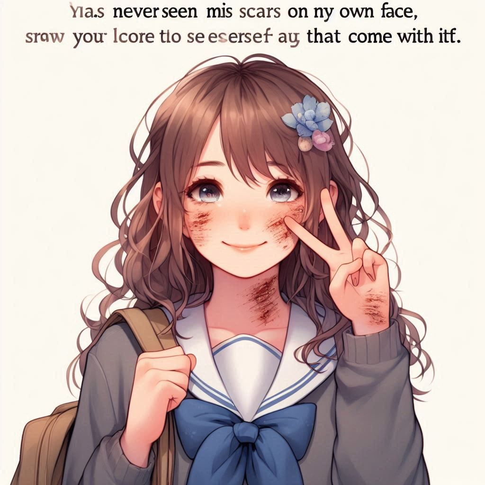

작가
이희영
출판일
2024년
감상평에 대한 AI그림
이 책은 태어나서 한번도 자신의 얼굴을 본 적이 없는 주인공인 '시울'의 일상을 이야기로 보여준다. 시울이는 다른 사람이 부정적으로 생각할 수 있는 얼굴의 흉터를 오히려 자신의 얼굴을 볼 수 있는 기회로 여기는 것을 보며 나도 성장하며 생기는 흉터들의 긍정적인 면을 바라보면 좋겠다고 생각하였다. 그리고 우리도 자신의 얼굴을 바로 보지 못한다는 점에서 시울이를 공감할 수 있다고 느꼈다.

감상평에 대한 AI평가
이 감상평은 다음과 같은 감정을 담고 있습니다:
✨ 공감: 주인공 시울의 상황에 깊이 공감하고, 그의 긍정적인 태도에 영향을 받아 성장하며 생기는 흉터들의 긍정적인 면을 바라보겠다는 결심을 보여줍니다.
✨ 경외감: 얼굴의 흉터를 긍정적으로 여기는 시울의 태도에 대한 경외감을 표현하고 있습니다.
✨ 연결감: 자신의 얼굴을 바로 보지 못하는 점에서 시울과 자신을 연결 짓고, 그와의 유사성을 통해 공감대를 형성하려는 감정을 느낄 수 있습니다.
이 감상평은 감정을 잘 표현하며, 독자가 주인공과 그 상황에 깊이 공감할 수 있도록 도와줍니다. 감상평의 중요한 요소들을 잘 반영한 훌륭한 평가입니다. 😊